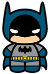

CURRICULUM VITAE DE BRUCE WAYNE
DATOS PERSONALES
- Nombre completo Bruce Wayne
- Fecha de nacimiento: 01/05/1939
- Lugar de nacimiento: Gotham City
FORMACION ACADEMICA
- 1956-1961: Universidad del espantapájaros Licenciatura en aeronaútica
- 1952-1956: Secundario Gotham Bachiller con especialización en trucos
EXPERIENCIA LABORAL
- 1975-1985: Desocupado Sin trabajo porquer se me rompió el batimovil
- 1965-1975: Cazavillanos y demás chusma Atrapé a Gatubela a joker a Victor Fries lo dejé porque se me congeló la capa
- 1962-1965: Aprendiz de superhéroesHice pasantía con Superman. Opté por usar mascara porque no pude aprender a peinarme el rulo